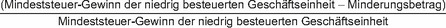

(1) Der einer Muttergesellschaft zuzurechnende Anteil am Steuererhöhungsbetrag einer niedrig besteuerten Geschäftseinheit entspricht dem nach Teil 5 dieses Gesetzes für diese Geschäftseinheit berechneten Steuererhöhungsbetrag multipliziert mit der Einbeziehungsquote der Muttergesellschaft für diese Geschäftseinheit für das betreffende Geschäftsjahr.
(2) Die Einbeziehungsquote wird wie folgt ermittelt:

In den Fällen, in denen die Muttergesellschaft die Primärergänzungssteuerregelung gegen sich selbst anwendet, beträgt die Einbeziehungsquote 100 Prozent.
(3) Der Minderungsbetrag ist der Betrag des Mindeststeuer-Gewinns, der nach den Grundsätzen des im Konzernabschluss der obersten Muttergesellschaft verwendeten anerkannten Rechnungslegungsstandards anderen Beteiligten zuzurechnen wäre, wenn der Mindeststeuer-Jahresüberschuss oder Mindeststeuer-Jahresfehlbetrag der niedrig besteuerten Geschäftseinheit ihrem Mindeststeuer-Gewinn entspräche und
- 1.
die Muttergesellschaft einen Konzernabschluss nach diesem Rechnungslegungsstandard aufzustellen hätte (hypothetischer Konzernabschluss),
- 2.
die Muttergesellschaft über eine Kontrollbeteiligung an der niedrig besteuerten Geschäftseinheit verfügen würde, sodass diese nach den allgemeinen Konsolidierungsgrundsätzen in den hypothetischen Konzernabschluss der Muttergesellschaft einbezogen würde,
- 3.
der gesamte Mindeststeuer-Gewinn der niedrig besteuerten Geschäftseinheit durch Geschäftsvorfälle mit Personen veranlasst wäre, die nicht der Unternehmensgruppe angehören, und
- 4.
alle nicht unmittelbar oder mittelbar von der Muttergesellschaft gehaltenen Eigenkapitalbeteiligungen an der niedrig besteuerten Geschäftseinheit von Personen gehalten werden, die nicht der Unternehmensgruppe angehören.
Bei transparenten Einheiten umfasst der Mindeststeuer-Gewinn keine Erträge, die nach § 43 Absatz 1 einem Gesellschafter zuzurechnen sind, der nicht der Unternehmensgruppe angehört.